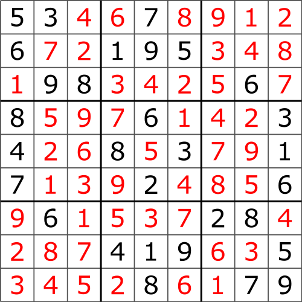

import org.chocosolver.solver.Model
val COLUMNS = 'A' .. 'I'
val ROWS = 1 .. 9
class SudokuSolver {
val model = Model("Some Sudoku")
val variables: Map<VariableName, IntVar> = createSudokuGrid()
private fun createSudokuGrid(): Map<VariableName, IntVar> {
val variables = HashMap<VariableName, IntVar>().toMutableMap()
ROWS.forEach { row ->
COLUMNS.forEach { column ->
createSudokuField(column, row) { variableName, variable ->
variables[variableName] = variable
}
}
}
return variables
}
private fun createSudokuField(column: Char, row: Int, callback: (variableName: VariableName, variable: IntVar) -> Unit) {
val variableName = "$column$row"
val square = model.intVar(variableName, 1, 9, false)
callback(variableName, square)
}
...
}
Solving
Constraint Satisfaction Problems
(CSP)
aka: Constraint Programming
Constraint programming
represents one of the closest approaches computer science
has yet made
to the Holy Grail of programming:
the user states the problem, the computer solves it.
Eugene C. Freuder, April 1997


Problem
- Defined by a set of variables
- Each variables has a domain of values
- A set of constraints defining the feasible combinations of values
Solution
- Assign each variable a value in its domain
- Such that all constraints are satisfied
- Optionally: add one or many optimization criteria

Source: https://en.wikipedia.org/wiki/Sudoku
Sudoku rules
- Fill a 9×9 grid with digits from 1 to 9.
- Each row must have all of the digits
- Each column must have all of the digits
- Each box (a 3×3 subgrid) must have all of the digits
Consequences
The same digit may not appear twice
in the same row, column or any box

Source: https://en.wikipedia.org/wiki/Sudoku
Wrong question:
How would I
implement an algorithm
to solve this?
Right question:
How can I model this problem?